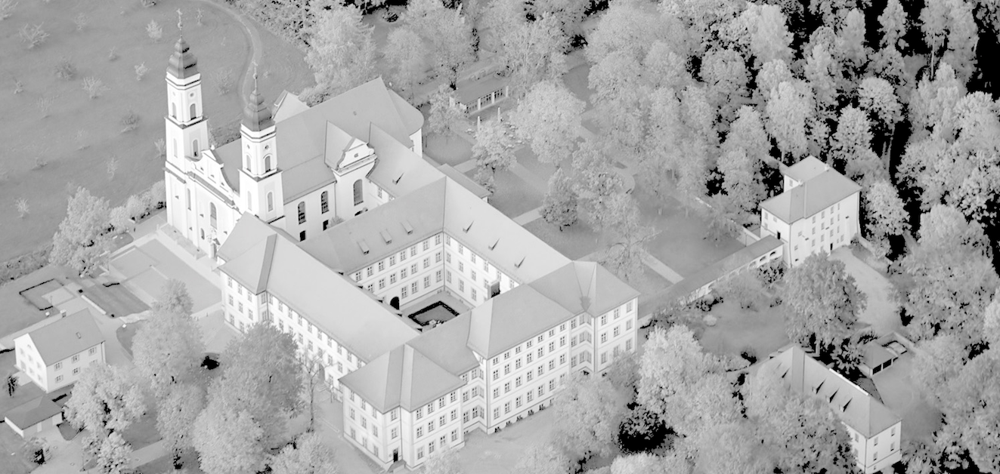
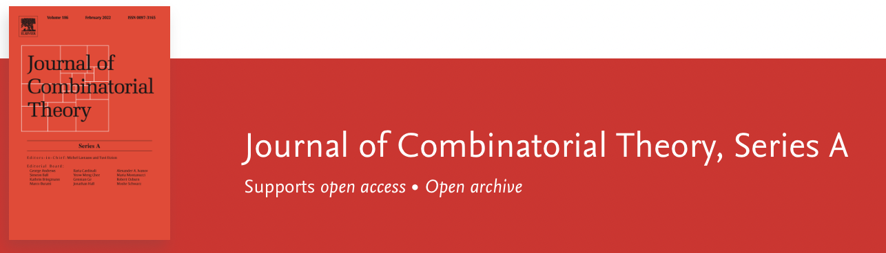

Finite Geometries 2025
Seventh Irsee Conference

31 August - 6 September 2025, Irsee, Germany
Organisers:
Ilaria Cardinali (University of Siena, Italy)
Michel Lavrauw (University of Primorska, Slovenia)
Klaus Metsch (Justus Liebig University Giessen, Germany)
Alexander Pott (Otto von Guericke University Magdeburg, Germany)
Invited speakers
About this conference
- Conference topics:
Combinatorial structures in Galois geometries;
Finite Incidence Geometry; Algebraic curves and varieties over finite fields; Geometric and algebraic coding theory; Finite groups and geometries; Algebraic design theory.
- This conference extends the series of previous meetings which took place at the Isle of Thorns (2000), in Oberwolfach (2001), and in Irsee since 2003.
Schedule
Book of abstracts
Special Issue in Designs Codes and Cryptography
Practical info
- The conference venue is the Irsee Monastery.
- Participation in this conference is by invitation only. All participants may submit an abstract for a contributed talk on some aspect of their research related to the main topics of the conference.
- Sunday 31 August 2025: check-in at 15:00, registration 17:00-19:00, and dinner 19:00-21:00.
Talks
- Organisers: Ilaria Cardinali, Michel Lavrauw, Klaus Metsch, Alexander Pott
- We gratefully acknowledge the financial support provided by the following institutions.

